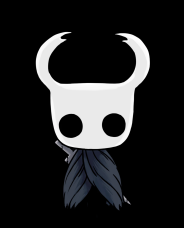

Hollow Knight podstawowe informacje
Hollow Knight jest grą wyprodukowaną przez zespół Team Cherry i wydaną w 2017 roku.
Hollow Knight: Silksong
W 2019 roku zapowiedziany został sequel o nazwie Hollow Knight: Silksong, w którym gracz wcieli się w Hornet, księżniczkę-obrończyni Hallownest, która musi zmierzyć się z zupełnie nową i obcą krainą Pharloom, nawiedzaną przez klątwę.
Na czym polega gra?
Jej akcja rozgrywa się w upadłym królestwie Hallownest, zamieszkanym przez różne społeczności owadów. Królestwo jest dręczone przez Infekcję, która przekształca rozumne owady w agresywne bestie i wskrzesza skorupy zmarłych stworzeń.
Hollow Knight jest przygodową grą akcji w której postać gracza przemierza sieć dwuwymiarowych połączonych ze sobą lokacji tworzących jeden spójny świat, w trakcie rozgrywki bohater wielokrotnie spotyka na swojej drodze zamknięte przejścia do których dostęp zdobywa w miarę poczynionych postępów jak np. posiadanie odpowiedniego uzbrojenia lub umiejętności.
Głowna Postać
Rycerz (ang. The Knight) – protagonista i grywalna postać w grze Hollow Knight. Jest to odrzucone Naczynie, które powróciło do upadłego królestwa Hallownest aby zatrzymać Infekcję.
